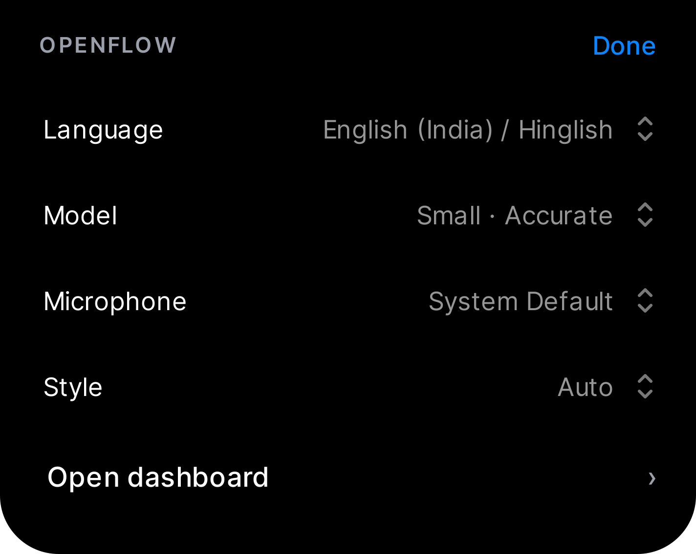
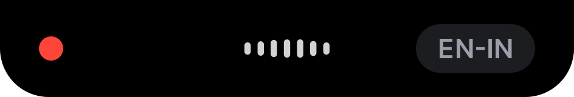

Does it understand Odia?

Every clip, one dot
Each dot is one of the 100 clips, placed by its word error rate. Further left is better. Drag the slider, or hover a dot, to follow one clip across the engines.
Read what each one heard.
Thirty real clips. The top line is the true sentence; below it, what each engine wrote. Tinted words are wrong.
Does it write Odia, or something else?
Share of the letters each engine wrote that are in the Odia script. Whisper has no Odia mode, so it writes Odia speech in the Latin alphabet, or in Bengali and Devanagari letters, none of which an Odia reader can use.
Odia in, English out.
Speak Odia and get English text. chrF and BLEU score the English against a human translation; higher is better, 100 is a perfect match.
How long, and how much memory?
Speed is how many seconds of work one second of speech needs. Under 1 is faster than you talk. All of it runs on the CPU.

How long for your audio?
Memory in use
Pick a model by what you need.
Accuracy against speed for every engine we tested. Bottom left is best: few errors, fast. The size of a dot is its memory.

What if nobody speaks?

How we measured.
So you can check us: the data is public, the code is in the repository, and the limits are written down.
The setup
What the numbers mean
- Word error rate counts the words that must be changed, added or removed to turn the engine's text into the true sentence, divided by the words in the true sentence. It can pass 100%.
- Character error rate is the same count on letters. It is kinder to near misses.
- Speed is processing time divided by audio length, after a warm-up run.
- chrF and BLEU compare the English output with a human translation.
The limits
- One computer, CPU only. GPU and NPU speeds are not measured here.
- Small samples: 100 Odia clips, and 60 each for English and Hindi. Read differences of a point or two as noise.
- Read speech from one public dataset. Casual, noisy talk is harder for every engine.
- The silence test uses synthetic non-speech, not recordings of real rooms.
# Odia accuracy, speed and translation (writes docs/data/odia-research.json)
python -m openflow.research_odia 100
# English, Hindi, memory, silence test and the clip explorer (writes docs/data/ml-research.json)
python -m openflow.research_ml 60
# put the new numbers on this page
node docs/figures/research/inline-data.mjs